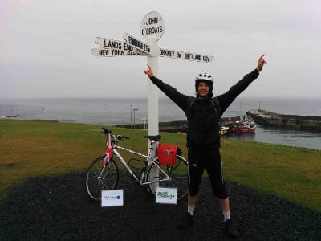

When I was 16 years old, in July 2011, I was diagnosed with Hodgkin’s Lymphoma. Lying in a bed in Alder Hey children's hospital, I had no idea what the future held for me. All I knew was that I must embark on a course of chemo and radiotherapies. I was born and brought up on the Isle of Man and at the time I was in the middle of my A levels at QEII high school. I'm now free from cancer and my life has returned to normal. At the time of the cycle I was only, two years post treatment. So it was a testament to to the superb work of the amazing doctors and nurses of Alder Hey hospital that I was able to attempt the challenge.
As I have been one of the lucky ones to survive the experience of cancer, it was really important to me to pay something back and help others going through the same experience. money for charities that do amazing work in the fight against cancer. The 1000 mile trip took me 14 days and was physically and emotionally challenging. I was so proud of myself to finish!
I decided to split equally any money raised between two charities that I think make a difference in the fight against cancer. Macmillan Cancer Support were incredibly caring at a tough time in my life. They were particularly supportive to my mum and dad, who were naturally very distressed and bewildered about my situation. So part of the money I raise will to go to Macmillan because this help and support must continue to be available for other young people and their families.
Alder Hey Children's Hospital Charity is the second charity I decided to support as they've personally shown me love, care and attention that I will be eternally grateful for. Your donations will go towards the Alder Hey Oncology Department.